数学运算符号对于简化数学表述形式非常重要，我们几乎无法想象在计算中缺了它们会怎样。但是，在数学史的千百年里，数学运算符号其实是一个相当新近的发明。
数学家们常称最好的数学发现看起来都该是很美的。他们喜欢把强大的理论用简单的符号来表达。比如，欧拉公式表明一个图形的顶点数（V）、边数（E）和面数（F）一定满足关系式V-E+F=2。又如之前提到的毕达哥拉斯定理（即勾股定理），简简单单a2+b2=h2的形式。再如，欧拉恒等式eπi+1=0，这个式子展示出无理数e、π和虚数单位i以及0与1是如何相互关联起来的。而这些式子的美妙，至少部分地要归功于其简洁的表述形式。
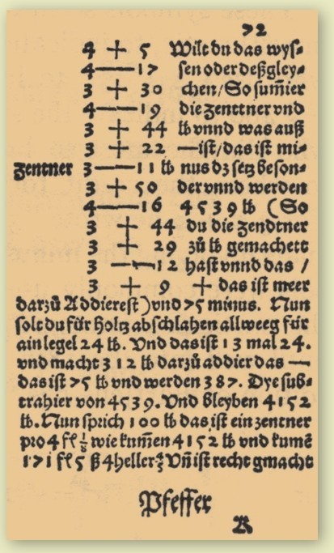
从约翰尼斯·威德曼于1489年出版的书中摘取的一页，他引入了加号和减号两个运算符号。
运用文字表达
我们已经知道如何用数码去构造整个数字系统（见第16页：数字系统）。但早期的人们是如何做加法的呢？事实上，古代数学家把需要计算的数字像文字一样嵌入句子中，用文字来表达想做的运算。例如，“4乘以5等于20”。
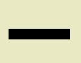
减号/负号
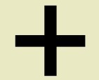
加号/正号
乘号
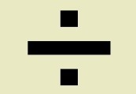
除号
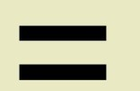
等号
5个简单的运算符号足以令你开启数学之旅。
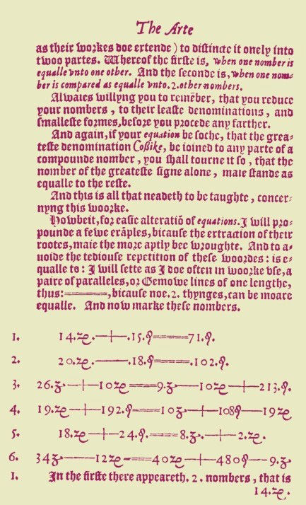
等号第一次出现在印刷文献上是在1557年罗伯特·雷科德的书《砺智石》中。
间隔号
间隔号是放置于两个数之间的一个点，许多人用它来替代乘法符号“×”。间隔号看起来像句号或小数点，但是相对于后两者，间隔号的位置要略高一些。
2 · 3 = 6 = 2 × 3
运用线段
古希腊数学家常用特殊长度的线段来表达数字。除法的意义就是比较需要多少段短线段方能拼凑出一条较长的线段。他们也会画一些图形去求解问题，一个典型的例子就是阿基米德利用多边形计算圆周率π（见第72页）。此时的数学家也开始添加一些符号，作为对已验证行之有效的运算方法的缩写。比如，埃及学者在两个数之间画上两条腿表示加法。
乘法符号的引入归功于威廉·奥特瑞德，于1631年。
符号化的时代
加号“+”的最早运用可以追溯到1360年，是由法国人尼克拉·奥雷斯姆书写的。后人猜测这个符号是由拉丁文“et”（“和”的意思）演化而来。减号“-”在一个多世纪之后的1489年出现在德国人约翰尼斯·威德曼的书中。等号“=”则是在1557年出现在罗伯特·雷科德的《砺智石》一书中。乘法符号“×”是1631年由英国人威廉·奥特瑞德引入的。而乘号“×”是圣安德鲁十字架的形状--圣安德鲁是被钉死在这种形状的十字架上的--奥特瑞德选中这个形状可能出于宗教信仰的原因。不过，他也对不同数之间的比感兴趣，而符号“×”可能含有连接正方形中排列的不同数组的意味。最后，除号“÷”是于1659年由约翰·拉恩引进的，这个符号从一个能分割物体的短剑图案演化而来。
符号表
下表详尽罗列了大多数常用数学符号，并对它们的含义与用法进行了简短描述。
+ 加号 用于数的加法 1+1=2
− 减号 用于数的减法 2−1=1
× 乘号 用于数的乘法 2×3=6
÷ 除号 用于数的除法 6÷2=3
ab 幂 用于指数运算 23=8
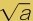
平方根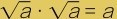
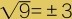
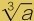
立方根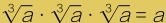
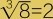
= 等号 连接等式两边 5=2+3
≠ 不等号 表示两侧的不等关系 5≠4
> 严格大于号 左侧的值严格大于右侧的值 5>4
< 严格小于号 左侧的值严格小于右侧的值 4<5
≥ 大于等于号 左侧的值不小于右侧的值 5≥4
≤ 小于等于号 左侧的值不大于右侧的值 4≤5
( ) 圆括号 先计算括号内的表达式 2×(3+5)=16
. 小数点 十进制小数分隔符 2.56=2+56/100
% 百分号 1% = 1/100 10%×30=3
ppm 百万分之一 1ppm = 1/1 000 000 10ppm×30=0.0003
ppb 十亿分之一 1ppb = 1/1 000 000 000 10ppb×30=3×10-7
除号
单词“obelus”是除法符号的别名，源自希腊文，意为“尖柱”或“棍棒”。后来因为修道士手写抄书，这个符号慢慢演变成了一把短剑或箭矢的样子。如果发现行文有错误，他们就会标记上一个除号。后来在数学上短剑符号被符号“÷”取代。
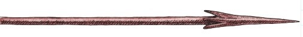
参见：
▶度量与单位，第122页
原理
BODMAS是Brackets（括号）、Order （power）（阶或幂）、Division（除法）和Multiplication（乘法）、Addition（加法）和Subtraction（减法）的首字母缩写。这个词可以帮助读者记住四则混合运算的运算顺序。
A) 5+(3×4)
先算括号内的，再算加法：
=5+12=17
B) (1+4)2 –3
先算括号内的，再做乘方运算，然后算减法：
=52–3=25–3=22
C) 23÷4
先做乘方运算，再算除法：
=8÷4=2
D) 82÷42+(7–6)
先算括号内的，再做乘方运算，然后算除法，最后算加法：
=82÷42+1
=64÷16+1
=4+1
=5